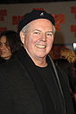

|
January 30th, 2006
Big Momma's House 2 was the #1 movie this past weekend, with the largest box-office weekend take for a film opening in January! (Only the Star Wars Special Edition release in 1997 was higher.)
November 11th, 2005
George has been recording the score to Big Momma's House 2 at Fox this week. SoundtrackNet took pictures from the session, and you can check them out here.
September 24th, 2005
George was in NYC last week to participate as a mentor in the IFP's Rough Cuts program. The film-makers selected scenes from their films and George improvised to them on a synth keyboard to demonstrate various approaches to scoring.
August 14th, 2005
Hear George's interview this week (Aug 14-20) with Daniel Schwieger on the new and very hip Film Music Radio web site.
After his 8th year as an advisor to the Sundance Composers Lab, George said this year was his favorite. He was there with John Waters to advise and critique the composers and directors that were part of the lab this summer.
George's upcoming projects include, "Flakes" an indie film about a New Orleans singer-songwriter who's day gig is managing a "Cereal Bar," "Big Momma's House 2" for Fox, "The Cleaner" for New Line, and "Santa Clause 3" for Disney.
June 8th, 2005
George heads for Paris, France this week. As it turns out A Dirty Shame is opening there at the same time as his visit and the French film music magazine "Cinefonia" will be interviewing him about his work on it. John Waters has a big following in France.
Also, George has been hired to score Flakes, an independent comedy set in New Orleans for Indigent Films.
May 19th, 2005
George won a BMI Award last night for his work on "The 4400". For a picture of George with BMI President and CEO Del Bryant, click here. Also, George has just been signed to score Big Mama's House 2, coming out this December.
April 11th, 2005
George was in Boston at Berklee College of Music last week where BMI presented a scholarship in his name.
January 30th, 2005
George had a great time at the 2005 Sundance Film Festival.
Check out "BMI @ Sundance 2005: Photos"
<< Previous 8 News Items | Next 8 News Items >>
Main Page News
|
{kind=link}